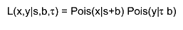

namespace RooStats::NumberCountingUtils
NumberCountingUtils
These are RooStats standalone utilities that calculate the p-value or Z value (eg. significance in 1-sided Gaussian standard deviations) for a number counting experiment. This is a hypothesis test between background only and signal-plus-background. The background estimate has uncertainty derived from an auxiliary or sideband measurement.
This is based on code and comments from Bob Cousins and on the following papers:
- Evaluation of three methods for calculating statistical significance when incorporating a
systematic uncertainty into a test of the background-only hypothesis for a Poisson process
Authors: Robert D. Cousins, James T. Linnemann, Jordan Tucker
http://arxiv.org/abs/physics/0702156
NIM A 595 (2008) 480--501 -
Statistical Challenges for Searches for New Physics at the LHC
Authors: Kyle Cranmer
http://arxiv.org/abs/physics/0511028 -
Measures of Significance in HEP and Astrophysics
Authors: J. T. Linnemann
http://arxiv.org/abs/physics/0312059
The problem is treated in a fully frequentist fashion by interpreting the relative background uncertainty as being due to an auxiliary or sideband observation that is also Poisson distributed with only background. Finally, one considers the test as a ratio of Poisson means where an interval is well known based on the conditioning on the total number of events and the binomial distribution.
In short, this is an exact frequentist solution to the problem of a main measurement x distributed as a Poisson around s+b and a sideband or auxiliary measurement y distributed as a Poisson around tau*b. Eg.

Naming conventions: Exp = Expected Obs = Observed P = p-value Z = Z-value or significance in sigma (one-sided convention)
Function Members (Methods)
| Double_t | BinomialExpP(Double_t sExp, Double_t bExp, Double_t fractionalBUncertainty) |
| Double_t | BinomialExpZ(Double_t sExp, Double_t bExp, Double_t fractionalBUncertainty) |
| Double_t | BinomialObsP(Double_t nObs, Double_t, Double_t fractionalBUncertainty) |
| Double_t | BinomialObsZ(Double_t nObs, Double_t bExp, Double_t fractionalBUncertainty) |
| Double_t | BinomialWithTauExpP(Double_t sExp, Double_t bExp, Double_t tau) |
| Double_t | BinomialWithTauExpZ(Double_t sExp, Double_t bExp, Double_t tau) |
| Double_t | BinomialWithTauObsP(Double_t nObs, Double_t bExp, Double_t tau) |
| Double_t | BinomialWithTauObsZ(Double_t nObs, Double_t bExp, Double_t tau) |
Class Charts
Function documentation
Expected P-value for s=0 in a ratio of Poisson means. Here the background and its uncertainty are provided directly and assumed to be from the double Poisson counting setup described in the BinomialWithTau functions. Normally one would know tau directly, but here it is determiend from the background uncertainty. This is not strictly correct, but a useful approximation.
See BinomialObsP
See BinomialExpP
Expected P-value for s=0 in a ratio of Poisson means. Based on two expectations, a main measurement that might have signal and an auxiliarly measurement for the background that is signal free. The expected background in the auxiliary measurement is a factor tau larger than in the main measurement.
P-value for s=0 in a ratio of Poisson means. Here the background and its uncertainty are provided directly and assumed to be from the double Poisson counting setup. Normally one would know tau directly, but here it is determiend from the background uncertainty. This is not strictly correct, but a useful approximation.
P-value for s=0 in a ratio of Poisson means. Based on two observations, a main measurement that might have signal and an auxiliarly measurement for the background that is signal free. The expected background in the auxiliary measurement is a factor tau larger than in the main measurement.